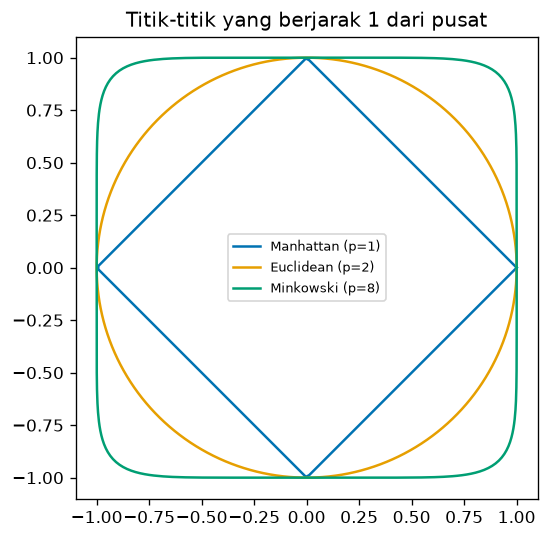
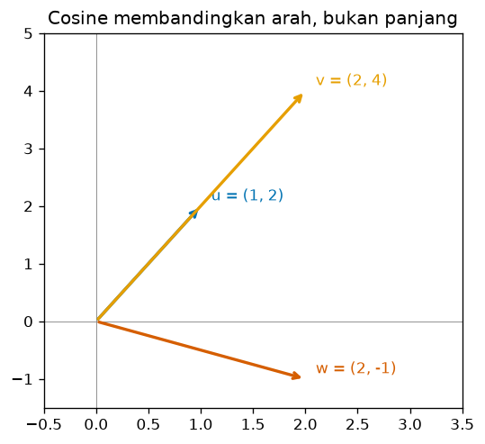

Bab 5 — Distance Metrics¶
Learning Objectives¶
Setelah mempelajari bab ini, kamu mampu:
- Menjelaskan mengapa distance metric (metrik jarak) menentukan hasil clustering.
- Menghitung jarak Euclidean, Manhattan, dan Minkowski secara manual dan dengan Python.
- Menghitung cosine similarity dan cosine distance, serta menjelaskan bedanya dengan jarak biasa.
- Menjelaskan arti tiap simbol pada rumus jarak.
- Memilih metrik yang sesuai untuk jenis data tertentu.
- Menjelaskan bagaimana skala fitur mengubah jarak dan tetangga terdekat.
Introduction¶
Bab 4 menyimpulkan bahwa kemiripan harus diterjemahkan menjadi angka. Sekarang kita belajar rumus-rumus untuk melakukannya. Pilihan rumus penting: dua metrik yang berbeda bisa menyebut pasangan data yang sama sebagai "dekat" atau "jauh", dan itu mengubah kelompok yang terbentuk.
Bab ini membahas empat ukuran yang paling sering dipakai: Euclidean, Manhattan, Minkowski, dan cosine. Untuk tiap ukuran kita pelajari intuisinya, rumusnya, hitungan manualnya, kapan dipakai, dan kodenya.
Fundamental Concepts¶
| Istilah | Arti |
|---|---|
| Distance metric | Aturan menghitung jarak dua titik yang memenuhi sifat jarak (Bab 4) |
| Euclidean distance | Jarak garis lurus, "jarak burung terbang" |
| Manhattan distance | Jumlah selisih mutlak tiap fitur, "jarak berjalan di kota berkotak-kotak" |
| Minkowski distance | Keluarga jarak yang menggeneralisasi Euclidean dan Manhattan dengan parameter \( p \) |
| Cosine similarity | Ukuran kesamaan arah dua vektor, tanpa memperhatikan panjangnya |
| Cosine distance | \( 1 - \) cosine similarity |
| Vector | Titik data dipandang sebagai anak panah dari titik asal |
Detailed Explanation¶
Intuisi: tiga cara berjalan dari A ke B¶
Bayangkan kamu di titik A dan ingin ke titik B yang 3 blok ke timur dan 4 blok ke utara.
- Euclidean: terbang lurus. Jaraknya \( \sqrt{3^2 + 4^2} = 5 \) blok.
- Manhattan: berjalan lewat jalan kota. Kamu harus menyusuri \( 3 + 4 = 7 \) blok.
- Cosine: tidak peduli jarak, hanya bertanya "apakah kita menghadap arah yang sama dari titik asal?".
flowchart TD
A[Dua titik data] --> B{Apa yang penting?}
B -->|Jarak lurus<br/>selisih besar menonjol| C[Euclidean]
B -->|Jumlah selisih<br/>tiap fitur| D[Manhattan]
B -->|Keluarga umum<br/>parameter p| E[Minkowski]
B -->|Arah vektor<br/>bukan panjang| F[Cosine]Euclidean distance¶
Jarak garis lurus antara dua titik. Ini ukuran paling umum dan dasar K-Means (Level 4). Ia menonjolkan selisih besar karena selisih dikuadratkan.
Kapan dipakai: data numerik kontinu dengan skala sebanding, dan kamu ingin pengertian "jarak" sehari-hari.
Manhattan distance¶
Jumlah selisih mutlak tiap fitur. Karena tidak dikuadratkan, ia kurang terpengaruh oleh satu selisih yang sangat besar dibanding Euclidean.
Kapan dipakai: data berdimensi tinggi, data dengan outlier pada satu fitur, atau fitur yang bersifat "bertahap" seperti hitungan.
Minkowski distance¶
Rumus umum dengan parameter \( p \):
- \( p = 1 \) menghasilkan Manhattan.
- \( p = 2 \) menghasilkan Euclidean.
- Makin besar \( p \), makin yang menentukan hanyalah selisih terbesar. Pada \( p \to \infty \), hasilnya jarak Chebyshev, yaitu selisih terbesar dari semua fitur.
Kapan dipakai: ketika kamu ingin menyetel seberapa kuat selisih besar ditonjolkan.
Bentuk "jarak yang sama"¶
Cara melihat perbedaan metrik: gambarkan semua titik yang berjarak 1 dari pusat.

- Manhattan berbentuk belah ketupat.
- Euclidean berbentuk lingkaran.
- Minkowski dengan \( p \) besar makin mendekati persegi.
Artinya, tiap metrik punya definisi sendiri tentang "titik-titik yang sama dekatnya". Dua titik yang "tetangga terdekat" menurut satu metrik belum tentu demikian menurut metrik lain.
Cosine similarity dan cosine distance¶
Cosine melihat sudut antara dua vektor, bukan panjang atau jaraknya:
- Searah: cosine similarity = 1.
- Tegak lurus: cosine similarity = 0.
- Berlawanan arah: cosine similarity = −1.

Vektor \( \mathbf{u} = (1, 2) \) dan \( \mathbf{v} = (2, 4) \) searah, hanya panjangnya berbeda. Menurut cosine keduanya identik (jarak 0), padahal menurut Euclidean mereka berjarak 2,24.
Kapan dipakai: data teks (jumlah kata), profil preferensi, atau situasi lain ketika proporsi lebih penting daripada besaran. Dua dokumen yang membicarakan topik sama tetapi berbeda panjang tetap dianggap mirip.
Perbandingan ringkas¶
| Metrik | Yang diukur | Sensitif selisih besar | Cocok untuk |
|---|---|---|---|
| Euclidean | Jarak garis lurus | Tinggi | Data numerik berskala sebanding, ruang berdimensi rendah |
| Manhattan | Jumlah selisih mutlak | Sedang | Dimensi tinggi, data dengan outlier |
| Minkowski (\( p \)) | Keluarga umum | Naik bersama \( p \) | Menyetel kepekaan |
| Cosine | Arah vektor | Tidak berlaku | Teks, proporsi, data jarang (sparse) |
Pengaruh skala fitur¶
Semua jarak di atas bergantung pada angka mentah tiap fitur. Fitur berskala besar (misalnya gaji dalam rupiah) akan mendominasi fitur berskala kecil (misalnya usia). Solusinya adalah menyamakan skala lebih dulu dengan feature scaling (Level 2 Bab 10), misalnya standardisasi. Pada praktik di bawah kita mengukur seberapa besar pengaruhnya pada Mall Customers.
Mathematical Foundation¶
Untuk dua titik \( \mathbf{x} = (x_1, \dots, x_d) \) dan \( \mathbf{y} = (y_1, \dots, y_d) \) dengan \( d \) fitur:
Euclidean:
Manhattan:
Minkowski dengan parameter \( p \ge 1 \):
Cosine similarity dan cosine distance:
Penjelasan simbol:
- \( d \) pada batas penjumlahan adalah jumlah fitur. \( i \) adalah penomoran fitur dari 1 sampai \( d \).
- \( x_i \) dan \( y_i \) adalah nilai fitur ke-\( i \) pada kedua titik.
- \( |x_i - y_i| \) adalah selisih mutlak: selalu positif, apa pun arahnya.
- \( p \) adalah pangkat yang menyetel kepekaan. \( p = 1 \) Manhattan, \( p = 2 \) Euclidean.
- \( \mathbf{x} \cdot \mathbf{y} = \sum x_i y_i \) adalah dot product (hasil kali titik): kalikan fitur yang bersesuaian, lalu jumlahkan.
- \( \lVert \mathbf{x} \rVert = \sqrt{\sum x_i^2} \) adalah panjang (norma) vektor.
- \( \theta \) adalah sudut antara kedua vektor. Membagi dengan panjang membuat hasilnya hanya bergantung pada arah.
Tujuan tiap rumus: Euclidean, Manhattan, dan Minkowski mengukur seberapa jauh. Cosine mengukur seberapa searah.
Contoh hitung manual¶
Titik \( A = (1, 2) \) dan \( B = (4, 6) \).
Langkah 1: selisih per fitur.
- Fitur 1: \( 4 - 1 = 3 \)
- Fitur 2: \( 6 - 2 = 4 \)
Euclidean:
Manhattan:
Minkowski \( p = 3 \):
(Karena \( 4{,}5^3 = 91{,}125 \), hasilnya sedikit di bawah 4,5.)
Chebyshev (selisih terbesar): \( \max(3, 4) = 4 \).
Interpretasi. Urutannya Manhattan (7) > Euclidean (5) > Minkowski \( p=3 \) (4,498) > Chebyshev (4). Makin besar \( p \), makin kecil nilainya, mendekati selisih terbesar (4). Ini sesuai pola: \( p = 1 \) menjumlahkan semua selisih, \( p \to \infty \) hanya melihat yang terbesar.
Cosine untuk \( \mathbf{u} = (1, 2) \) dan \( \mathbf{v} = (2, 4) \):
- Dot product: \( 1 \times 2 + 2 \times 4 = 2 + 8 = 10 \).
- Panjang: \( \lVert \mathbf{u} \rVert = \sqrt{1 + 4} = \sqrt{5} \), \( \lVert \mathbf{v} \rVert = \sqrt{4 + 16} = \sqrt{20} \).
- Hasil kali panjang: \( \sqrt{5} \times \sqrt{20} = \sqrt{100} = 10 \).
- Cosine similarity: \( 10 / 10 = 1 \). Cosine distance: \( 1 - 1 = 0 \).
Untuk \( \mathbf{w} = (2, -1) \): dot product \( 1 \times 2 + 2 \times (-1) = 0 \), sehingga cosine similarity = 0 (tegak lurus) dan cosine distance = 1.
Python Implementation¶
Kita kerjakan dalam enam langkah kecil. Setiap potongan kode diikuti penjelasannya. Skrip lengkapnya ada di examples/level-3/05_distance_metrics.py, dan versi notebook-nya di notebooks/level-3/05-distance-metrics.ipynb.
Konteks masalah: kita menghitung semua jarak untuk dua titik kecil, mencocokkannya dengan scikit-learn, membandingkan cosine, melihat bentuk jarak, lalu mengukur pengaruh skala fitur pada 200 pelanggan Mall Customers.
Input yang diharapkan: data titik dibuat di kode. Langkah 5 memakai data/mall_customers.csv.
Langkah 1 — Siapkan dua titik¶
import numpy as np
import pandas as pd
import matplotlib.pyplot as plt
from sklearn.metrics import pairwise_distances
from sklearn.preprocessing import StandardScaler
A = np.array([1.0, 2.0])
B = np.array([4.0, 6.0])
print("Selisih per fitur (B - A):", B - A)
print("Selisih mutlak :", np.abs(B - A))
Penjelasan:
A = np.array([1.0, 2.0])danB = np.array([4.0, 6.0])adalah dua titik dengan dua fitur. Kita memakai1.0(bukan1) agar tipenya desimal.B - Amenghitung selisih tiap fitur sekaligus (NumPy mengurangkan elemen yang bersesuaian):[3, 4].np.abs(B - A)mengambil nilai mutlaknya.
Langkah 2 — Hitung dengan rumus¶
euclidean = np.sqrt(np.sum((A - B) ** 2))
manhattan = np.sum(np.abs(A - B))
p = 3
minkowski_p3 = np.sum(np.abs(A - B) ** p) ** (1 / p)
chebyshev = np.max(np.abs(A - B))
print("Euclidean :", round(float(euclidean), 4))
print("Manhattan :", round(float(manhattan), 4))
print("Minkowski (p=3) :", round(float(minkowski_p3), 4))
print("Chebyshev (max) :", round(float(chebyshev), 4))
print("Minkowski p=1 sama dengan Manhattan?", np.isclose(np.sum(np.abs(A - B) ** 1) ** 1, manhattan))
print("Minkowski p=2 sama dengan Euclidean?", np.isclose(np.sum(np.abs(A - B) ** 2) ** (1 / 2), euclidean))
Penjelasan:
np.sum((A - B) ** 2)menjumlahkan kuadrat selisih, dannp.sqrt(...)mengakarkannya. Ini rumus Euclidean.np.sum(np.abs(A - B))adalah Manhattan.np.sum(np.abs(A - B) ** p) ** (1 / p)adalah Minkowski. Kita pilihp = 3.np.max(np.abs(A - B))memberi selisih terbesar, yaitu Chebyshev.np.isclose(a, b)memeriksa dua angka sama dalam toleransi pembulatan. Kita memakainya untuk membuktikan bahwa Minkowski dengan \( p=1 \) sama dengan Manhattan dan \( p=2 \) sama dengan Euclidean.float(...)danround(..., 4)hanya merapikan tampilan angka.
Langkah 3 — Periksa dengan scikit-learn¶
pair = np.vstack([A, B])
for name, kwargs in [
("euclidean", {}),
("manhattan", {}),
("minkowski", {"p": 3}),
]:
value = pairwise_distances(pair, metric=name, **kwargs)[0, 1]
print(f"scikit-learn {name:<10}:", round(float(value), 4))
Penjelasan:
np.vstack([A, B])menumpuk kedua titik menjadi tabel 2 × 2 (dua baris, dua fitur).- Daftar
[("euclidean", {}), ("manhattan", {}), ("minkowski", {"p": 3})]memasangkan nama metrik dengan pengaturan tambahannya (kamus kosong berarti tidak ada). pairwise_distances(pair, metric=name, **kwargs)menghitung matriks jarak.**kwargsmeneruskan pengaturan sepertip=3.[0, 1]mengambil jarak antara baris pertama dan kedua dari matriks 2 × 2.{name:<10}di f-string menyejajarkan nama ke kiri selebar 10 karakter agar rapi.
Hasilnya harus sama dengan hitungan manual. Itu cara kita mengecek bahwa kode kita benar.
Langkah 4 — Cosine similarity dan cosine distance¶
u = np.array([1.0, 2.0])
v = np.array([2.0, 4.0]) # arah sama dengan u, panjang dua kali lipat
w = np.array([2.0, -1.0]) # tegak lurus terhadap u
def cosine_similarity(x, y):
return np.dot(x, y) / (np.linalg.norm(x) * np.linalg.norm(y))
for name, other in [("v (searah)", v), ("w (tegak lurus)", w)]:
cs = cosine_similarity(u, other)
print(
f"u dan {name}: cosine similarity = {cs:.4f}, "
f"cosine distance = {1 - cs:.4f}, Euclidean = {np.linalg.norm(u - other):.4f}"
)
Penjelasan:
u,v, danwadalah tiga vektor.vsearah denganutetapi dua kali lebih panjang.wtegak lurus terhadapu.def cosine_similarity(x, y)membuat fungsi dari rumus:np.dot(x, y)adalah dot product,np.linalg.norm(x)adalah panjang vektor.- Dalam perulangan kita cetak cosine similarity, cosine distance (\( 1 - \) similarity), dan jarak Euclidean agar bisa dibandingkan langsung.
:.4fdi f-string berarti empat angka di belakang koma.
Langkah 5 — Bentuk jarak sama¶
theta = np.linspace(0, 2 * np.pi, 400)
fig, ax = plt.subplots(figsize=(5, 5))
for p_val, color, label in [
(1, "#0072B2", "Manhattan (p=1)"),
(2, "#E69F00", "Euclidean (p=2)"),
(8, "#009E73", "Minkowski (p=8)"),
]:
c, s = np.cos(theta), np.sin(theta)
# titik-titik yang berjarak 1 dari pusat menurut metrik Minkowski p
r = 1 / (np.abs(c) ** p_val + np.abs(s) ** p_val) ** (1 / p_val)
ax.plot(r * c, r * s, color=color, label=label)
ax.set_aspect("equal")
ax.set_title("Titik-titik yang berjarak 1 dari pusat")
ax.legend(fontsize=8)
plt.show()
Penjelasan:
np.linspace(0, 2 * np.pi, 400)membuat 400 sudut dari 0 sampai satu putaran penuh.- Untuk tiap sudut kita cari titik yang berjarak tepat 1 dari pusat menurut metrik Minkowski \( p \). Titik arah
(cos, sin)dikalikan faktorr = 1 / (|c|^p + |s|^p)^(1/p)supaya jaraknya 1. - Kita gambar tiga garis: \( p = 1 \) (Manhattan), \( p = 2 \) (Euclidean), \( p = 8 \).
ax.set_aspect("equal")membuat skala sumbu x dan y sama agar lingkaran tampak bulat.
Langkah 6 — Pengaruh skala pada Mall Customers¶
df = pd.read_csv("data/mall_customers.csv")
cols = ["Age", "Annual Income (k$)", "Spending Score (1-100)"]
X = df[cols].to_numpy(dtype=float)
Xs = StandardScaler().fit_transform(X)
def nearest_neighbors(data):
d = pairwise_distances(data)
np.fill_diagonal(d, np.inf)
return d.argmin(axis=1)
nn_raw = nearest_neighbors(X)
nn_scaled = nearest_neighbors(Xs)
changed = np.where(nn_raw != nn_scaled)[0]
print("Pelanggan yang tetangga terdekatnya berubah setelah standardisasi:", len(changed), "dari", len(df))
print("\nStandar deviasi tiap fitur (mentah):", dict(zip(cols, X.std(axis=0).round(2).tolist())))
print("Standar deviasi tiap fitur (standardisasi):", dict(zip(cols, Xs.std(axis=0).round(2).tolist())))
# Pilih pelanggan pertama yang tetangganya berubah dengan selisih jarak yang jelas (bukan seri)
D_raw = pairwise_distances(X)
D_std = pairwise_distances(Xs)
i = next(int(k) for k in changed if D_raw[k, nn_scaled[k]] - D_raw[k, nn_raw[k]] > 1)
rows = [i, int(nn_raw[i]), int(nn_scaled[i])]
print("\nContoh pelanggan yang tetangganya berubah: pelanggan", df.loc[i, "CustomerID"])
print("Tetangga terdekat (mentah) : pelanggan", df.loc[nn_raw[i], "CustomerID"])
print("Tetangga terdekat (standardisasi): pelanggan", df.loc[nn_scaled[i], "CustomerID"])
print(df.loc[rows, ["CustomerID"] + cols].to_string(index=False))
print("Jarak mentah ke tetangga mentah / tetangga standardisasi :", round(float(D_raw[i, nn_raw[i]]), 2), "/", round(float(D_raw[i, nn_scaled[i]]), 2))
print("Jarak standardisasi ke tetangga mentah / tetangga standardisasi:", round(float(D_std[i, nn_raw[i]]), 2), "/", round(float(D_std[i, nn_scaled[i]]), 2))
Penjelasan:
Xberisi tiga fitur mentah semua pelanggan.StandardScaler().fit_transform(X)mengubahnya menjadi versi standar: tiap fitur berrata-rata 0 dan simpangan baku 1.nearest_neighbors(data)menghitung semua jarak denganpairwise_distances, mengisi diagonal dengannp.infagar titik tidak terpilih sebagai tetangganya sendiri, lalud.argmin(axis=1)memberi tetangga terdekat tiap pelanggan.np.where(nn_raw != nn_scaled)[0]menemukan pelanggan yang tetangga terdekatnya berubah setelah standardisasi.- Bagian akhir memilih satu contoh yang perbedaannya jelas (bukan seri), lalu mencetak datanya dan jarak pada kedua skala.
X.std(axis=0)menghitung simpangan baku tiap fitur. Pada data terstandardisasi nilainya 1 semua.
Code Explanation¶
| Yang kamu lihat | Artinya |
|---|---|
np.sqrt(np.sum((A - B) ** 2)) |
Euclidean |
np.sum(np.abs(A - B)) |
Manhattan |
np.sum(np.abs(A - B) ** p) ** (1 / p) |
Minkowski |
np.dot(x, y) / (np.linalg.norm(x) * np.linalg.norm(y)) |
Cosine similarity |
pairwise_distances(X, metric="...") |
Matriks jarak dengan metrik pilihan |
StandardScaler().fit_transform(X) |
Menyamakan skala fitur |
Pola umumnya: hitung selisih → gabungkan sesuai metrik → bandingkan.
How to Run¶
Jalankan dari folder utama proyek:
Skrip membuat dua gambar di docs/assets/level-3/. Untuk notebook:
Expected Output¶
Output berikut berasal dari eksekusi nyata skrip di atas (Python 3.14.10, NumPy 2.5.2, pandas 3.0.5, scikit-learn 1.9.0, matplotlib 3.11.1):
Selisih per fitur (B - A): [3. 4.]
Selisih mutlak : [3. 4.]
Euclidean : 5.0
Manhattan : 7.0
Minkowski (p=3) : 4.4979
Chebyshev (max) : 4.0
Minkowski p=1 sama dengan Manhattan? True
Minkowski p=2 sama dengan Euclidean? True
scikit-learn euclidean : 5.0
scikit-learn manhattan : 7.0
scikit-learn minkowski : 4.4979
u dan v (searah): cosine similarity = 1.0000, cosine distance = 0.0000, Euclidean = 2.2361
u dan w (tegak lurus): cosine similarity = 0.0000, cosine distance = 1.0000, Euclidean = 3.1623
[gambar disimpan: docs/assets/level-3/05-bentuk-jarak.png]
Pelanggan yang tetangga terdekatnya berubah setelah standardisasi: 54 dari 200
Standar deviasi tiap fitur (mentah): {'Age': 13.93, 'Annual Income (k$)': 26.2, 'Spending Score (1-100)': 25.76}
Standar deviasi tiap fitur (standardisasi): {'Age': 1.0, 'Annual Income (k$)': 1.0, 'Spending Score (1-100)': 1.0}
Contoh pelanggan yang tetangganya berubah: pelanggan 11
Tetangga terdekat (mentah) : pelanggan 13
Tetangga terdekat (standardisasi): pelanggan 9
CustomerID Age Annual Income (k$) Spending Score (1-100)
11 67 19 14
13 58 20 15
9 64 19 3
Jarak mentah ke tetangga mentah / tetangga standardisasi : 9.11 / 11.4
Jarak standardisasi ke tetangga mentah / tetangga standardisasi: 0.65 / 0.48
[gambar disimpan: docs/assets/level-3/05-cosine-arah.png]
Interpretasi output¶
Rumus manual. Euclidean 5, Manhattan 7, Minkowski \( p=3 \) sekitar 4,4979, dan Chebyshev 4, persis seperti hitungan manual. Kedua pengecekan True membuktikan \( p=1 \) adalah Manhattan dan \( p=2 \) adalah Euclidean.
scikit-learn. Ketiga nilainya (5,0; 7,0; 4,4979) identik dengan hitungan kita. Berarti rumus manual benar.
Cosine. Untuk u dan v (searah), cosine similarity 1 dan cosine distance 0, walau jarak Euclidean-nya 2,2361. Untuk u dan w (tegak lurus), cosine similarity 0 dan cosine distance 1, sedangkan Euclidean 3,1623. Jadi urutan "mana yang lebih dekat" bisa berbeda antara cosine dan Euclidean.
Skala fitur. Setelah standardisasi, 54 dari 200 pelanggan (27%) punya tetangga terdekat yang berbeda. Simpangan baku mentah usia 13,93 sedangkan pendapatan 26,20 dan skor belanja 25,76. Dengan data mentah, selisih satu satuan usia sama berat dengan satu satuan skor belanja, padahal skala keduanya berbeda.
Contohnya pelanggan 11 (usia 67, pendapatan 19, skor 14). Pada data mentah, tetangga terdekatnya pelanggan 13 (usia 58, pendapatan 20, skor 15) dengan jarak 9,11, sedangkan pelanggan 9 (usia 64, pendapatan 19, skor 3) berjarak 11,40. Setelah standardisasi urutannya terbalik: pelanggan 9 berjarak 0,48 dan pelanggan 13 berjarak 0,65. Alasannya, selisih usia 9 tahun dengan pelanggan 13 setara 0,65 simpangan baku usia, sedangkan selisih skor 11 dengan pelanggan 9 hanya sekitar 0,43 simpangan baku skor. Skala yang sebanding mengubah siapa yang tampak dekat.
Practical Examples¶
Segmentasi pelanggan (Euclidean + standardisasi). Fitur numerik seperti usia, pendapatan, dan skor belanja biasanya dikelompokkan dengan Euclidean setelah diskalakan. Ini kombinasi bawaan K-Means.
Data dengan outlier (Manhattan). Jika satu pelanggan punya pengeluaran 100 kali lipat, Euclidean terlalu terguncang oleh selisih itu. Manhattan lebih tenang karena selisih tidak dikuadratkan.
Pengelompokan dokumen (cosine). Artikel panjang dan ringkasannya membahas topik yang sama, tetapi jumlah katanya berbeda jauh. Euclidean menganggap mereka jauh, cosine menganggap mereka mirip.
Cara memilih metrik¶
| Situasi | Pilihan yang masuk akal |
|---|---|
| Fitur numerik, skala sudah disamakan, dimensi rendah | Euclidean |
| Banyak fitur, ada outlier pada fitur tertentu | Manhattan |
| Ingin menyetel kepekaan terhadap selisih besar | Minkowski dengan \( p \) lain |
| Teks atau data jarang, proporsi lebih penting dari besaran | Cosine |
| Data biner | Jaccard (Bab 4) |
| Data campuran angka dan kategori | Gower (dibahas di Level 4 dan seterusnya) |
Tidak ada metrik yang selalu benar
Metrik yang bagus bergantung pada makna datamu. Tanyakan: "dua data ini disebut mirip kalau apa?" Lalu pilih rumus yang mengukur hal itu.
Hands-on Exercises¶
- Hitung manual Euclidean, Manhattan, dan Minkowski \( p=3 \) untuk \( P = (0, 0) \) dan \( Q = (6, 8) \).
- Hitung cosine similarity antara \( (3, 0) \) dan \( (5, 5) \).
- Pada kode, ganti
p = 3menjadip = 10. Ke arah mana nilainya bergerak? - Mengapa cosine distance antara \( (1, 2) \) dan \( (100, 200) \) adalah 0 tetapi Euclidean-nya besar?
- Pada Langkah 6, ganti standardisasi dengan MinMaxScaler. Apakah jumlah pelanggan yang tetangganya berubah sama dengan 54?
Jawaban
- Selisih: 6 dan 8. Euclidean: \( \sqrt{36 + 64} = \sqrt{100} = 10 \). Manhattan: \( 6 + 8 = 14 \). Minkowski \( p=3 \): \( (216 + 512)^{1/3} = 728^{1/3} \approx 8{,}996 \) (karena \( 9^3 = 729 \)).
- Dot product: \( 3 \times 5 + 0 \times 5 = 15 \). Panjang: \( \sqrt{9} = 3 \) dan \( \sqrt{50} \approx 7{,}071 \). Cosine similarity: \( 15 / (3 \times 7{,}071) = 15 / 21{,}21 \approx 0{,}707 \). Sudutnya 45 derajat.
- Nilainya turun dari 4,498 menjadi sekitar 4,02, mendekati selisih terbesar yaitu 4. Makin besar \( p \), makin mendekati jarak Chebyshev.
- Kedua vektor searah (yang kedua hanya 100 kali lebih panjang), jadi sudutnya 0 dan cosine distance 0. Euclidean mengukur jarak titik, yang besar karena panjangnya berbeda.
- Tidak ada jawaban pasti tanpa menjalankan. Hasilnya bisa berbeda dari 54 karena MinMaxScaler membagi dengan rentang, bukan simpangan baku. Jalankan kodenya dan bandingkan.
Troubleshooting¶
| Masalah | Penyebab | Solusi |
|---|---|---|
RuntimeWarning: invalid value encountered in divide pada cosine |
Salah satu vektor bernilai nol semua, panjangnya 0 | Buang atau tangani vektor nol sebelum menghitung cosine |
Hasil pairwise_distances tidak cocok dengan hitungan manual |
Parameter p lupa diteruskan atau memakai metrik lain |
Periksa metric dan p. Bandingkan juga dengan hitungan manual |
| Jarak didominasi satu fitur | Skala fitur berbeda | Standardisasi sebelum menghitung jarak |
ValueError: Unknown metric |
Nama metrik salah ketik | Gunakan nama seperti "euclidean", "manhattan", "minkowski", "cosine" |
| Dua metrik memberi tetangga terdekat berbeda | Itu wajar, definisi "dekat" berbeda | Pilih metrik berdasarkan makna data (lihat tabel memilih metrik) |
Summary¶
- Euclidean \( \sqrt{\sum (x_i - y_i)^2} \): jarak lurus. Manhattan \( \sum |x_i - y_i| \): jumlah selisih mutlak. Minkowski \( \left(\sum |x_i - y_i|^p\right)^{1/p} \): keluarga yang mencakup keduanya.
- Pada \( A = (1,2) \) dan \( B = (4,6) \): Euclidean 5, Manhattan 7, Minkowski \( p=3 \) sekitar 4,498, Chebyshev 4. Makin besar \( p \), makin mendekati selisih terbesar.
- Cosine mengukur arah, bukan panjang: cosine distance = \( 1 - \cos\theta \). Vektor searah punya cosine distance 0.
- Skala fitur mengubah jarak. Setelah standardisasi, 54 dari 200 pelanggan punya tetangga terdekat yang berbeda.
- Tidak ada metrik terbaik untuk semua data. Pilih menurut makna data.
Bab berikutnya: Bab 6 membahas ruang fitur (feature space) dan efek jumlah fitur terhadap jarak.
References¶
- Tan, P.-N., Steinbach, M., Karpatne, A., & Kumar, V. Introduction to Data Mining (Pearson), bab tentang ukuran kemiripan.
- Scikit-learn documentation: Pairwise metrics, affinities and kernels.
- Scikit-learn documentation:
pairwise_distancesdanStandardScaler. - NumPy documentation:
numpy.linalg.norm.